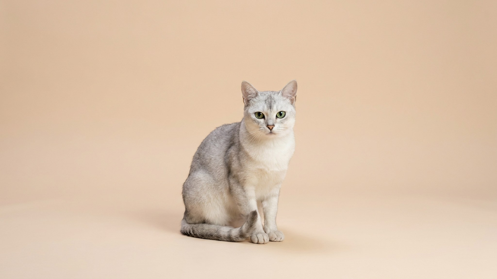

В 1981 году в английский дом привезли перса, а дверь оставили приоткрытой — и к нему пробралась бурманская кошка. Котят не планировали, но они вышли настолько красивыми, что заводчица закрепила породу. Так появилась бурмилла: серебристая кошка с обведёнными глазами и характером, который часто зовут «идеальным компромиссом». Разберём, каково с ней жить и что в уходе нельзя пропустить.
🐾 У вас бурмилла?
AnimaLife соберёт уход под породу: к каким болезням есть склонность, что проверять по возрасту, чем кормить и когда пора к врачу. Бесплатно, прямо в мессенджере.
Собрать план ухода → Собрать в MAX →
У вас iPhone? AnimaLife есть в App Store
Бурмилла — молодая порода: ей чуть за сорок лет. От бурмы ей достались общительность, привязанность к человеку и любовь к играм; от персидской шиншиллы — спокойствие и та самая серебристая «припудренная» шубка. Отсюда её главная фишка — тёмная обводка вокруг глаз, носа и губ, будто кошку аккуратно подвели карандашом.
Окрас бывает серебристым или золотистым, с лёгким «типпингом» — когда прокрашен только кончик каждого волоска. Из-за этого шерсть словно светится и меняет оттенок на свету.
Бурмилла — та редкая кошка, что берёт лучшее с двух сторон. Она игрива и любопытна, встречает у двери и ходит по квартире за хозяином, но не требует внимания ежеминутно и спокойно переносит, когда вы заняты.
Короткая шелковистая шерсть почти не путается — расчёсывания раз в неделю достаточно, в линьку чуть чаще. А вот выразительные глаза с тёмной обводкой требуют внимания: у части кошек из уголков подтекает слеза, и её стоит мягко убирать, чтобы не темнела шерсть под глазами.
Базовый набор такой же, как для любой кошки: когтеточки, чистка зубов дома, контроль веса. Бурмиллы склонны к перееданию — порода «выпрашивающая», и лишний вес набирается незаметно.
🐾 Ваш питомец — бурмилла?
Заведите профиль в AnimaLife: приложение запомнит породу, возраст и вес и будет подсказывать по уходу именно для неё. Вопросы AI-ветеринару — круглосуточно и бесплатно.
Завести профиль → Завести в MAX →
У вас iPhone? AnimaLife есть в App Store
🐾 Понравился разбор?
Подпишитесь на канал — каждый день разбираем по одному тревожному симптому у кошек и собак: что в пределах нормы, а когда пора к врачу. Подпишитесь, чтобы не пропустить разбор, который может спасти здоровье вашего питомца.
Бурмилла — кошка для семьи, которая хочет ласкового, но не «прилипчивого» компаньона и готова уделять ему время по вечерам. Порода в целом крепкая, но, как у любой выведенной линии, здоровье во многом зависит от заводчика: берите котёнка там, где родителей проверяют и показывают документы.
При выборе обратите внимание на ясные чистые глаза, активность и любопытство котёнка. Любые вопросы о здоровье и профилактике лучше обсудить со своим ветеринаром — плановый осмотр раз в год для молодой кошки и раз в полгода для возрастной снимает большинство рисков заранее.
Материал носит информационный характер и не заменяет очную консультацию ветеринара.